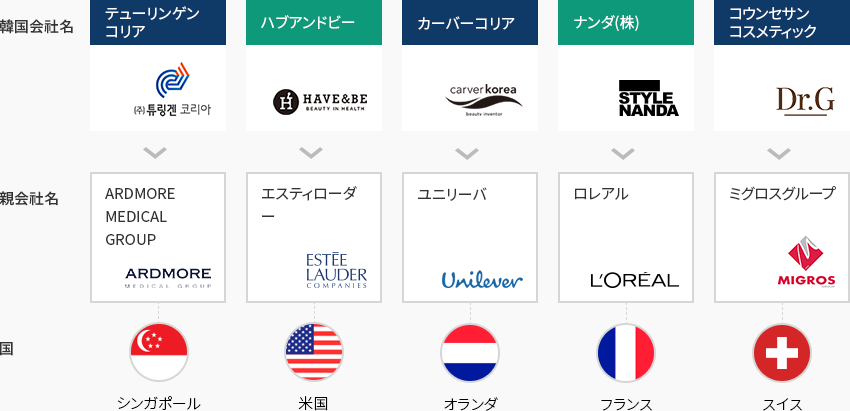
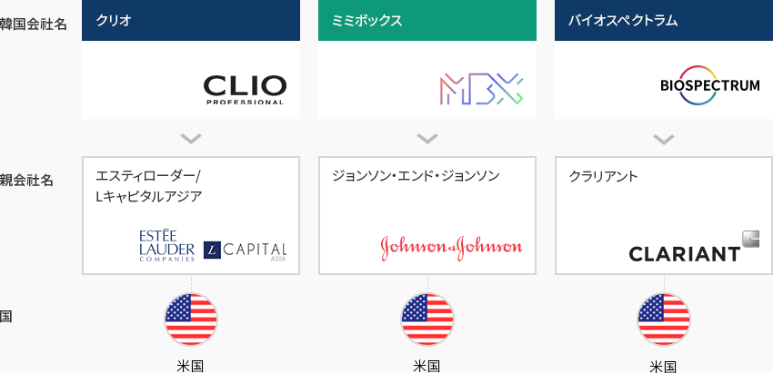
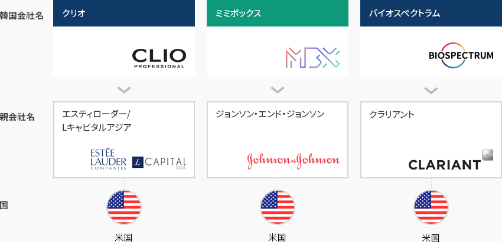
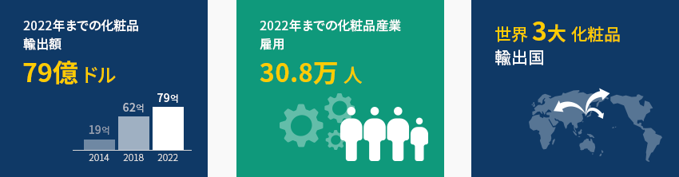
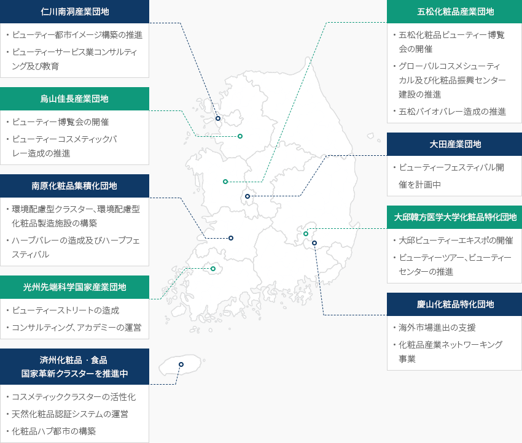

ビューティー
- Home
- Why KOREA
- 産業
- ビューティー
ビューティー
Beauty
-
グローバル化粧品市場の 小さな巨人、韓国 コンテンツを閉じるグローバル化粧品市場の 小さな巨人、韓国韓国の化粧品市場は約126憶ドル(2020年基準)で、インドに次ぐ世界で9番目に大きな市場であり、化粧品製造技術も保有しており
グローバル化粧品市場で競争力を確保している。また、グローバルブランドの製品開発ではテストベッド(Test-Bed)の役割をしている。特に、グローバル市場ではKビューティーが主流と認められ、韓国製化粧品に対するグローバル需要も急速に増加している。
コロナ禍でも輸出は着実に増加し、2020年には史上初めて70億ドル規模を超えており、
15.7％の年平均成長率(‘16～’20)を記録し、世界4大化粧品輸出国としての地位を維持している。「世界の国別化粧品輸出実績」(単位: 百万ドル)世界の国別化粧品輸出実績 順位, 国, 年度(2016,2017,2018,2019, 2020), CAGR (‘16-‘20) 順位 国 2016年 2017年 2018年 2019年 2020年 CAGR
(‘15-‘19)1 フランス 13,326 15,245 16,983 17,552 15,319 3.6% 2 米国 9,540 10,162 10,737 11,006 9,741 -0.2% 3 ドイツ 8,301 8,691 9,684 9,472 8,221 -0.3% - 4
- 大韓民国
- 4,224
- 4,997
- 6,308
- 6,571
- 7,602
- 15.8%
5 日本 2,719 3,703 5,252 5,868 6,790 15.8% 6 イタリア 4,714 5,175 5,790 5,682 4,894 0.9% 7 中国 3,195 3,778 4,411 4,760 4,751 10.4% 8 香港 1,837 2,325 3,151 3,730 4,675 26.3% ※ 出所 : ITC(2020)、大韓化粧品産業研究院(2020)
※ 注 : 国内化粧品を基準に分類/シンガポールは仲介貿易中心の実績なので、化粧品製造・輸出国から除外 -
コロナ禍でも 輸出拡大を通じて成長を維持 コンテンツを開くコロナ禍でも 輸出拡大を通じて成長を維持韓国の化粧品生産は持続的な輸出拡大を通じて内需市場の成長鈍化やコロナ禍による
市場低迷にもかかわらず、最近5年間(‘16～’20)、年平均3.8％の成長率を記録した。特に、化粧品の輸出はKビューティーなどの韓流の影響で高い成長をみせており、
最近5年間(‘16～’20)の化粧品輸出額の年平均増加率は15.8％に上る。化粧品の生産実績 区分, 年度(2010 ~ 1019年) ※ 出所 : 食品医薬品安全処
※ 企業数は製造メーカーの中で生産実績を報告した企業のみを含む。 -
グローバル化粧品メーカーの 韓国ブランドへの持続的な投資 コンテンツを開くグローバル化粧品メーカーの 韓国ブランドへの持続的な投資海外投資家の韓国化粧品市場に対する関心が続いている。2016年にグローバル化粧品メーカーのユニリーバがカーバーコリア(Carver Korea)を、2018年にはロレアルが
スタイルナンダ(Stylenanda)を買収した。それと前後してミグロス(MIGROS)、ジョンソン・エンド・ジョンソン、クラリアントなど
のグローバル企業の投資が続いており、特に、コウンセサンコスメティックの場合、コロナ禍でも
売上が成長するなど、Kビューティーの底力を見せていると評価される。「グローバル企業‐韓国企業の買収事例」グローバル企業‐韓国企業の買収事例 国, 親会社名, 韓国会社名 国 親会社名 韓国会社名 シンガポール ARDMORE MEDICAL GROUP テューリンゲンコリア 米国 エスティローダー ハブアンドビー オランダ ユニリーバ カーバーコリア フランス ロレアル ナンダ(株) スイス ミグロスグループ コウンセサンコスメティック  「グローバル企業‐韓国企業への投資事例」
「グローバル企業‐韓国企業への投資事例」グローバル企業‐韓国企業への投資事例 国, 親会社名, 韓国会社名 国 親会社名 韓国会社名 米国 エスティローダー/Lキャピタルアジア クリオ 米国 ジョンソン・エンド・ジョンソン ミミボックス 米国 クラリアント バイオスペクトラム
-
未来の輸出主力産業への 転換 コンテンツを開く未来の輸出主力産業への 転換韓国政府は化粧品産業を未来の輸出主力産業として集中的に育成する計画である。
2022年までに化粧品3大輸出国への飛躍と化粧品産業で雇用30.8万人を達成し、
特に中華圏に集中している輸出地域の多角化を模索している。
韓国は2020年3月に世界初の「カスタマイズ型化粧品販売制度」を実施・運営しており、
厳しい基準を設けてカスタマイズ型化粧品マネージャーを輩出するなど、個人のニーズに合わせた多様な製品を提供する基盤を築いた。それだけでなく、韓国及び東南アジアやインドの消費者の皮膚の特徴を把握するために、消費者アンケート、
皮膚測定、皮膚遺伝子分析、皮膚微生物分析など多角的な研究を進めており、その特性に合わせた製品開発、
市場進出戦略を構築し、世界市場を先導しようとしている。 -
産業育成に向けた 政府及び自治体の積極的な支援 コンテンツを開く産業育成に向けた 政府及び自治体の積極的な支援韓国化粧品産業は市場及び流通インフラが集積した首都圏を中心に産業活動が活発に
展開されており、 企業数全体の57.9％、従事者数の57.1％が当該地域に立地している。また、慶尚北道(慶山市)、忠清北道(五松)などに地域別クラスターが構築され、韓国化粧品産業発展の
土台となっており、官民協議体を運営することで烏山佳長産業団地、華城郷南産業団地、仁川南洞工業団地、
忠北五松・梧倉産業団地などに「Kビューティークラスター」を構築している。政府は化粧品の生産、新技術の研究開発、ビューティーサービスを含む専門教育、中小企業広報(コンサルティング)などを
一ヵ所で行えるKビューティークラスターを構築し、Kビューティー産業の育成に向けた代表的な拠点を構築する計画だ。「韓国化粧品産業の地域別クラスターの支援現況」-
仁川南洞産業団地
- ビューティー都市イメージ構築の推進
- ビューティーサービス業コンサルティング及び教育
-
五松化粧品産業団地
- 五松化粧品ビューティー博覧会の開催
- グローバルコスメシューティカル及び化粧品振興センター建設の推進
- 五松バイオバレー造成の推進
-
烏山佳長産業団地
- ビューティー博覧会の開催
- ビューティーコスメティックバレー造成の推進
-
大田産業団地
- ビューティーフェスティバル開催を計画中
-
南原化粧品集積化団地
- 環境配慮型クラスター、環境配慮型化粧品製造施設の構築
- ハーブバレーの造成及びハーブフェスティバル
-
大邱韓方医学大学化粧品特化団地
- 大邱ビューティーエキスポの開催
- ビューティーツアー、ビューティーセンターの推進
-
光州先端科学国家産業団地
- ビューティーストリートの造成
- コンサルティング、アカデミーの運営
-
慶山化粧品特化団地
- 海外市場進出の支援
- 化粧品産業ネットワーキング事業
-
済州化粧品ㆍ食品 国家革新クラスターを推進中
- コスメティッククラスターの活性化
- 天然化粧品認証システムの運営
- 化粧品ハブ都市の構築
※ 出所 : 未来化粧品育成方策(保健福祉部、2019.5) -
仁川南洞産業団地


Invest KOREA
食品 / ファッション / ビューティーPM
チョン·ボヨン
基幹産業誘致チーム
T.+82-2-3460-7888
おすすめの立地情報
産業団地情報
[Gyeonggi-do Osan City] Gajang 2nd General Industrial Complex
Click [Go to Detailed Information] to go to the relevant information screen of
Smart K-Factory service of Industrial Complex Corporation.
-
Complex nameGajang 2nd General Industrial Complex
-
Initial designation date2008.05.14
-
Designated area(m2)595,431
-
ManagementGyeonggi-do Osan City
-
Nearby RailwayOsan Station
-
Distance from station(km)4
-
Nearby AirportGimpo International Airport
-
Distance from airport(km)61
-
Industrial water Supply capacity(ton/day)3595(㎥/day)
-
Affiliation local governmentGyeonggi-do Osan City
-
Population228,768
産業団地情報
[Gwangju Metropolitan City Buk-gu] Gwangju High-tech Science and Industrial
Complex
Click [Go to Detailed Information] to go to the relevant information screen of
Smart K-Factory service of Industrial Complex Corporation.
-
Complex nameGwangju High-tech Science and Industrial Complex
-
Initial designation date1990.07.21
-
Designated area(m2)9,991,652
-
ManagementKorea Industrial Complex Corporation
-
Nearby RailwayGwangju Station
-
Distance from station(km)14
-
Nearby AirportGwangju Airport
-
Distance from airport(km)15
-
Industrial water Supply capacity(ton/day)17177(㎥/day)
-
Affiliation local governmentGwangju Metropolitan City Buk-gu
-
Population1,454,154
産業団地情報
[Incheon Metropolitan City Namdong-gu] Namdong National Industrial Complex
(Renewable Business District)
Click [Go to Detailed Information] to go to the relevant information screen of
Smart K-Factory service of Industrial Complex Corporation.
-
Complex nameNamdong National Industrial Complex (Renewable Business District)
-
Initial designation date1980.09.02
-
Designated area(m2)9,504,046
-
ManagementKorea Industrial Complex Corporation
-
Nearby RailwayBupyeong Station
-
Distance from station(km)9
-
Nearby AirportIncheon Airport
-
Distance from airport(km)32
-
Industrial water Supply capacity(ton/day)49081(㎥/day)
-
Affiliation local governmentIncheon Metropolitan City Namdong-gu
-
Population2,943,491
産業団地情報
[Chungcheongbuk-do Cheongju City] Osong 2nd Life Science Complex (Chungbuk
Free Economic Zone)
Click [Go to Detailed Information] to go to the relevant information screen of
Smart K-Factory service of Industrial Complex Corporation.
-
Complex nameOsong 2nd Life Science Complex (Chungbuk Free Economic Zone)
-
Initial designation date2010.10.15
-
Designated area(m2)3,283,845
-
ManagementKorea Industrial Complex Corporation
-
Nearby RailwayOsong Station
-
Distance from station(km)3
-
Nearby AirportCheongju International Airport
-
Distance from airport(km)24
-
Industrial water Supply capacity(ton/day)7,685(㎥/day)
-
Affiliation local governmentChungcheongbuk-do Cheongju City
-
Population843,782
産業団地情報
[Jeju Special Self-Governing Province Jeju-si] Lava and Seawater General
Industrial Complex
Click [Go to Detailed Information] to go to the relevant information screen of
Smart K-Factory service of Industrial Complex Corporation.
-
Complex nameLava and Seawater General Industrial Complex
-
Initial designation date2009.12.09
-
Designated area(m2)197,341
-
ManagementJeju Special Self-Governing Province Jeju-si
-
Nearby Railway-
-
Distance from station(km)-
-
Nearby AirportJeju International Airport
-
Distance from airport(km)33
-
Industrial water Supply capacity(ton/day)1970(㎥/day)
-
Affiliation local governmentJeju Special Self-Governing Province Jeju-si
-
Population491,184
産業団地情報
[Gangwon-do Gangneung City] Gangneung Science General Industrial
Complex
Click [Go to Detailed Information] to go to the relevant information screen of
Smart K-Factory service of Industrial Complex Corporation.
-
Complex nameGangneung Science General Industrial Complex
-
Initial designation date1993.12.15
-
Designated area(m2)1,486,850
-
ManagementGangwon-do Gangneung City
-
Nearby RailwayGangneung Station
-
Distance from station(km)9
-
Nearby AirportYangyang International Airport
-
Distance from airport(km)40
-
Industrial water Supply capacity(ton/day)4,939(㎥/day)
-
Affiliation local governmentGangwon-do Gangneung City
-
Population212,935